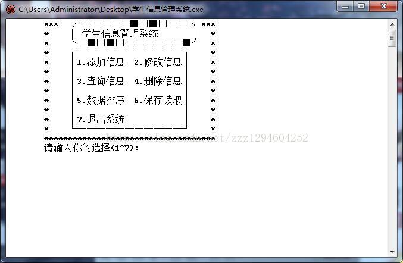
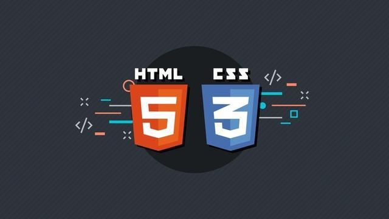
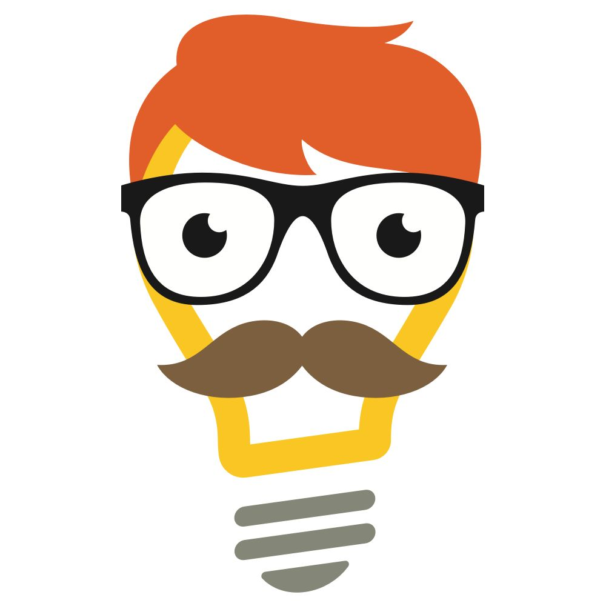
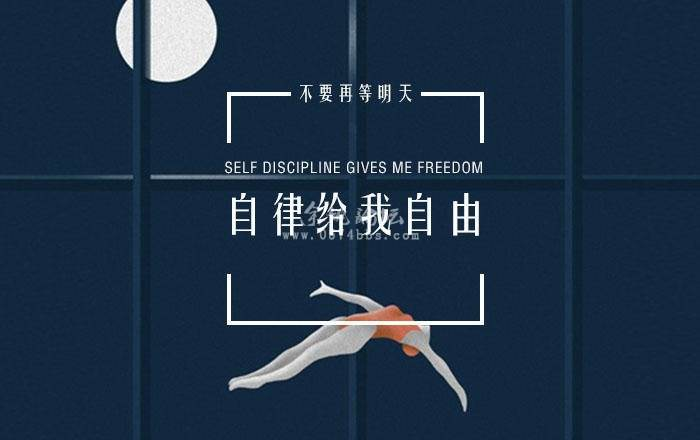
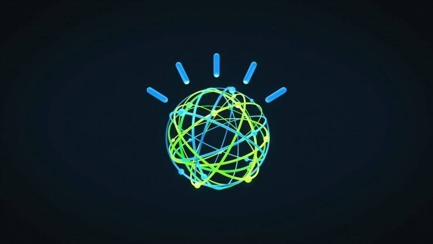
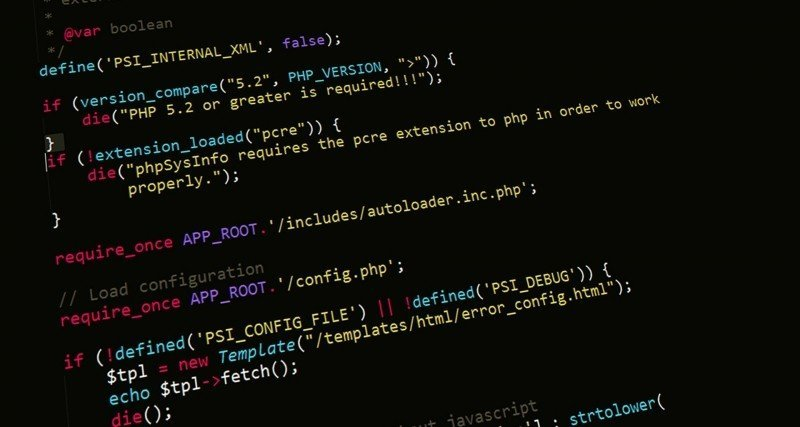
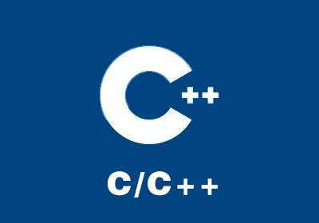
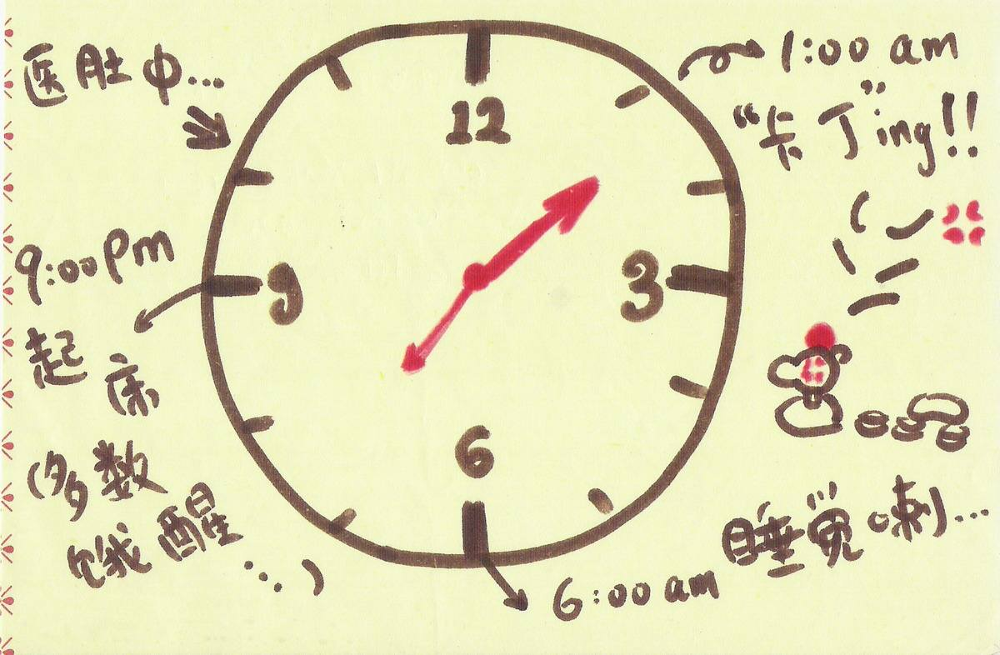

前文是楼主的一些经历，给大家分享一下，希望能够帮到大家。文中有不足的地方还请指出，我们一同探讨，或者可以直接看正文。

CSS的魅力就是让我们前端工程师像设计师一样进行网页的设计，我们能轻而易举的改变颜色、布局、制作出漂亮的影音效果等等。

CSS的魅力就是让我们前端工程师像设计师一样进行网页的设计，我们能轻而易举的改变颜色、布局、制作出漂亮的影音效果等等。

普遍认为，当我们能抵挡住诱惑并能够自我约束时，称之为自律，但当我们能够做到这些时，真的就是自律吗？

要说现在啊，我们使用频率最高的设备是啥，那一定是手机啊，几乎不离身，没了它，生活就索然无味啊，除了手机，对我来说，排在第二位的就是电脑了。
编程是信仰！信仰是不兼容的！！当然，上边那些其实都是半桶水。真正的高手是万物皆为我所用一切皆可信手拈来的。

是不是感觉自接触编程以来，每天都在努力的学习，但是学习的速度还是跟不上别人的速度？不是你不够努力，只是别人的方法更高效！

当你做了几年c++程序员后，很自信地觉得自己已经掌握了这阶段，当重新对这门语言来个彻底大扫除的时候发现，又有新的语法出现。

你是不是曾经也很纳闷，为什么你能坚持到凌晨两点，而你的朋友晚上十点就挺不住了吗？
想必，你们一定看过很多关于程序员的自我修养的文章。